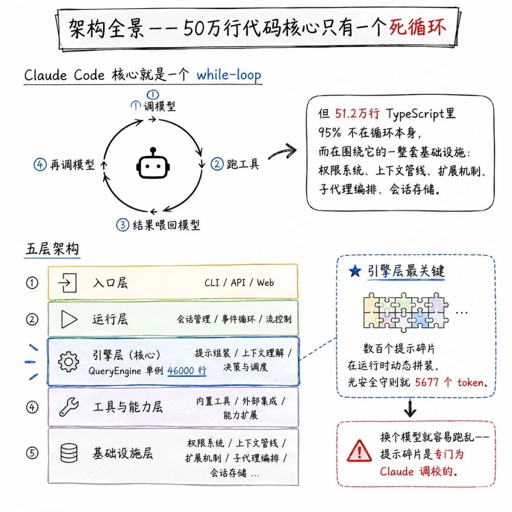
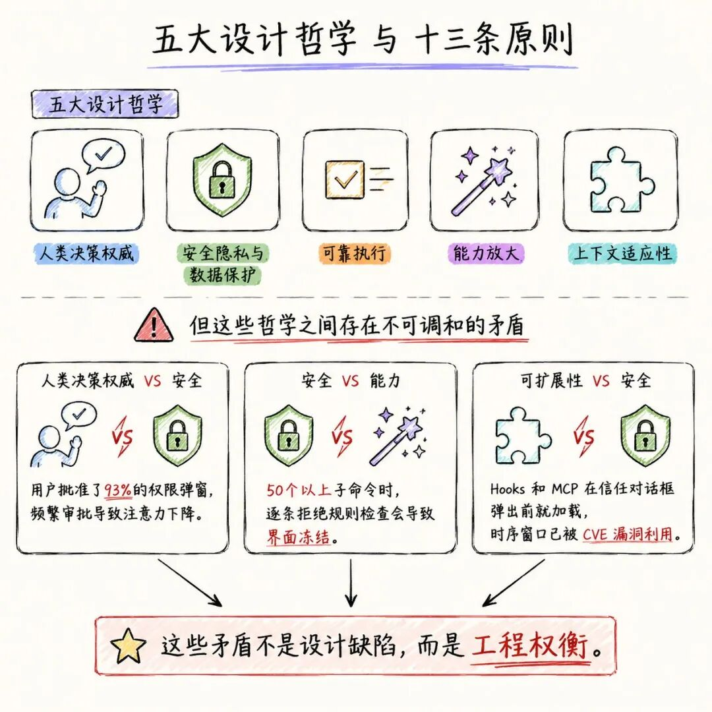
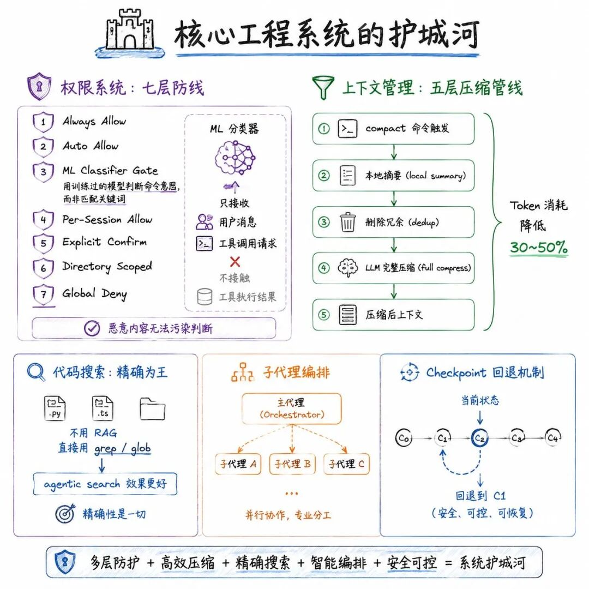
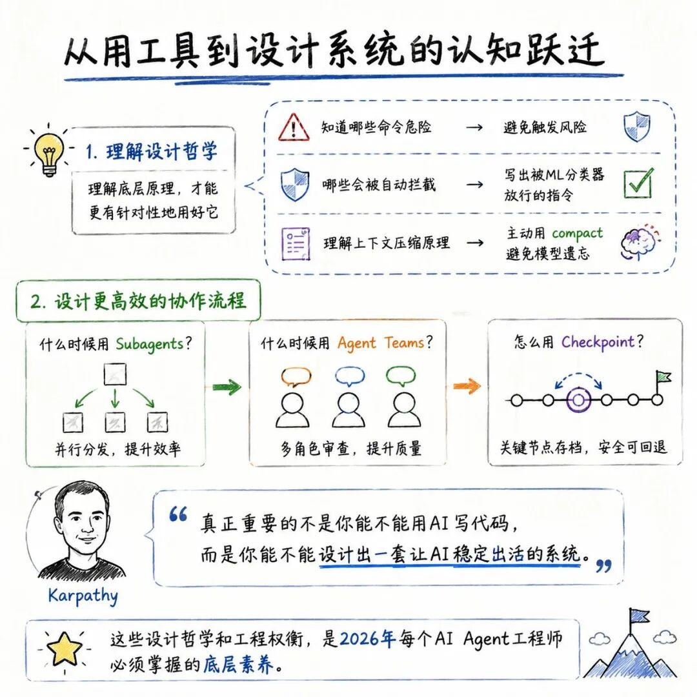
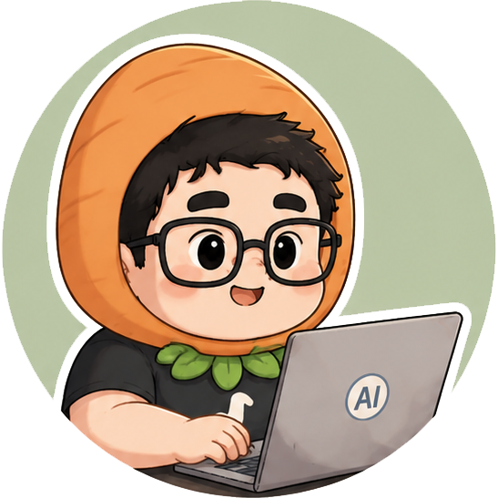

数月前的一个凌晨，Claude Code 的源码因为一个诡异的低级失误，被连同调试文件一起打包进了新版本的 npm 包里。五十一万行 TypeScript 源码，几乎原封不动地暴露在互联网上。
几小时内，全网开始镜像这批代码。Anthropic 紧急下线了版本，但为时已晚。开发者们像拆解一件失落的圣物一样，第一次完整看清了这个全球数百万工程师依赖的 AI 编程工具，在引擎盖下到底是什么样子。
那天晚上我也没睡，翻着源码，翻着社区连夜产出的万字拆解，脑子里反复转着一个问题：这个系统让我省了那么多时间，但它自己是怎么做到“不乱”的？
这篇文章，我想把 Claude Code 的底层设计一层一层拆开。不讲评测，不讲技巧，只讲一件事：这套系统的架构师们，在“让 AI 自主干活”和“不让它闯祸”之间，架起了哪几道承重墙。
一、架构全景：50万行代码，核心只有一个死循环

所有拆解 Claude Code 架构的文章，最终都会指向一个让人意外的起点。
MBZUAI VILA Lab 联合 UCL 发表的一篇系统分析论文，在研究了 Claude Code 的源码后，给出了一个极简的总结：这套系统的核心，就是一个 while-loop。
调模型 → 跑工具 → 把结果喂回去 → 再调模型。任何用过 LangChain 的人都能在二十行代码里写出相同的逻辑。
但 Claude Code 的源码体量是 51.2 万行 TypeScript，内含约 40 个工具、85 个斜杠命令，底层运行时是 Bun，终端界面用 React + Ink 渲染。
这 50 万行代码里，95% 不在循环本身，而在围绕它的一整套基础设施：权限系统、上下文管线、扩展机制、子代理编排、会话存储。
从源码中可追溯出五层架构：入口层（CLI、桌面端、网页、IDE 插件统一路由）、运行层（REPL 循环、状态机、Hook 系统）、引擎层（QueryEngine 单例，代码量近 46000 行，负责拼接上下文、管理提示缓存、处理流式响应、压缩对话）、工具与能力层、基础设施层。
其中最关键的设计细节藏在引擎层：Claude Code 不是只有一个系统提示，而是数百个提示碎片在运行时动态拼装——根据模式、工具和上下文的不同，注入不同的提示片段。光是安全守则就有约 5677 个 token。
这也是为什么这套系统换个模型就容易跑乱——那些提示碎片是专门为 Claude 模型调校过的，不是通用设计。
二、五大设计哲学与十三条原则：每条规则背后都是踩过的坑

研究论文没有止步于“怎么实现”，而是进一步追问：这个系统为什么要设计成这样？ 通过综合 Anthropic 官方文档、源码和社区分析，论文总结出五条驱动架构的设计哲学：
- 人类决策权威——人类要能随时看到、批准或否决 Agent 的操作
- 安全、隐私与数据保护——即使人类不注意，系统也要能自己保护用户及其代码
- 可靠执行——Agent 做的事要和人类想的一致，长时间运行也不能走偏
- 能力放大——系统要让人类能做到以前做不到的事
- 上下文适应性——系统要能适应用户的具体项目、工具、习惯，并随使用时间逐步改善
在这五条哲学之上，论文提炼出十三条设计原则，如“拒绝优先”、“渐进式信任”、“纵深防御”、“最小脚手架、最大操作 Harness”等。
但论文也直言不讳地指出：这些设计哲学之间存在不可调和的矛盾。
人类决策权威 vs 安全：根据 Anthropic 的分析，用户批准了约 93% 的权限弹窗，频繁审批导致注意力下降，安全不能完全依赖人。
安全 vs 能力：安全机构发现当命令包含 50 个以上子命令时，逐条做拒绝规则检查会导致界面冻结，系统被迫放弃逐条检查。
可扩展性 vs 安全：Hooks 和 MCP 扩展在信任对话框弹出之前就会加载，这个时序窗口已被漏洞（CVE-2025-59536、CVE-2026-21852）利用——这些漏洞已在披露后数周内修复。
这些矛盾不是设计缺陷，而是同时追求多条设计哲学所带来的工程权衡。理解这些权衡，是真正用好 Claude Code 的关键。
三、核心工程系统：50万行代码的“护城河”在哪

3.1 权限系统：七层防线 + ML 分类器
大多数开源 Agent 框架对安全的态度是“加个确认弹窗”。
Claude Code 构建的是七层分级权限体系：Always Allow（只读操作默认放行）、Auto Allow（匹配白名单的写操作自动通过）、ML Classifier Gate（训练过的分类器判断命令危险性）、Per-Session Allow（当前会话授权过的操作模式）、Explicit Confirm（高危操作必须逐一确认）、Directory Scoped（限制在项目目录内操作，越界即拦截）、Global Deny（硬编码禁止列表，任何情况下不执行）。
最有意思的是第三层 ML 分类器。
传统 Agent 安全方案靠正则黑名单拦截危险命令（如 rm、curl），但攻击者很容易绕过。Claude Code 的分类器用训练过的模型判断命令意图，而不是匹配关键词。
这套分类器还有一个关键设计：它只接收用户消息和工具调用请求作为输入，从不接触工具执行结果。
这意味着即使 AI 被恶意诱导，恶意内容也无法直接污染分类器的判断。如果分类器连续阻止同一个操作三次，或一个会话中累计阻止达到二十次，Auto Mode 会主动暂停，退回传统的手动审批模式。
3.2 上下文管理：五层压缩管线
长对话中 Token 消耗是指数级增长的。Claude Code 构建了五层上下文压缩管线来解决这个问题。当上下文窗口接近 200K token 上限时，模型性能会显著下降——可能开始“遗忘”早期指令或频繁出错。
Claude Code 的压缩管线通过 /compact 命令触发，工作机制分三步：先在本地生成对话摘要（Session Memory 压缩），再删除冗余消息和过期工具输出（Micro Compact），最后只在必要时才调用 LLM 做完整压缩（compactConversation）。
社区实测显示，有效的上下文管理能将重复编码任务的 Token 消耗降低 30-50%。
3.3 代码搜索：为什么不用 RAG？
Claude Code 的代码搜索策略常让新用户意外——它不使用 RAG（检索增强生成），没有 embedding，没有向量数据库，直接用 grep/glob 做文本搜索。
Claude Code 创建者 Boris Cherny 在多个公开场合确认：“早期版本的 Claude Code 使用过 RAG + 本地向量数据库，但我们很快发现 agentic search 效果更好。由模型驱动的 glob 和 grep 击败了一切。”
Claude Code 的做法是把搜索主动权完全交给 LLM：让模型自己决定搜什么关键词、用什么正则表达式、搜到的结果够不够、要不要继续深入搜。
它像一个有经验的开发者，先搜一个模糊的大范围关键词，看返回结果，从中提取新线索，再搜下一轮，直到找到所有需要的信息为止。
这条技术路线的本质是两种工程哲学的差异：RAG 是“给你一份别人替你筛好的答案”，grep 是“让你自己去问问题”。Claude Code 选择后者的理由极其朴素——代码搜索场景下，精确性本身就是一切。 语义搜索虽然能跨语言理解意图，但在代码世界的精确匹配场景里，开发者要的是找到那一行真实的代码，而不是一段“语义相近”的近似片段。
但这套方案有实打实的代价：每次 grep 都会把大量无关代码行灌进 LLM 上下文，Token 消耗比向量检索方案高 30-60%。在超大型 monorepo 中，grep 的延迟也可能成为瓶颈。
3.4 子代理编排：多 Agent 的调度中枢
Claude Code 从 v2.1 起支持 Agent Teams 功能，能将复杂任务拆解并分发给多个专业化子 Agent 并行或串行执行。
论文分析指出，其子代理编排机制包括任务依赖图谱的构建、基于上下文的动态调度，以及子代理间的通信协议。在生产环境中，该机制可将大规模代码重构任务的执行效率提升 3 倍以上。
3.5 Checkpoint 与回退：让错误可逆
Claude Code 内置了一套完整的 Checkpoint 机制——每次用户输入都会自动创建一个会话快照，保存完整的对话状态、文件变更和上下文。
当 AI 改错了代码或走偏了方向，你可以通过双击 Esc 键或 /rewind 命令回到任意一个历史检查点。回退菜单提供四个选项：仅回退代码、仅回退对话、全部回退、或从该点开始做对话摘要。
这套机制的工程价值在于：它让“AI 犯错”这件事从灾难变成了可控成本。你不需要害怕 Agent 改错代码，因为你可以在任何时候回到上一个干净的状态。
四、扩展生态：四种机制打开能力边界
Claude Code 在 2026 年 4 月发布的扩展体系包含六种机制（按执行顺序）：CLAUDE.md（指令/规则）、Hooks（生命周期回调）、Skills（可复用提示词）、内置工具池、MCP（外部工具服务器）、Agents（委托执行）。其中最核心的是 MCP 协议——通过统一的标准接口，Claude Code 可以接入 GitHub、Slack、Jira 等任意外部系统。MCP Server 将工具定义和治理集中在一处，所有兼容 MCP 的 Agent 都能复用，一次配置、全生态共享。
五、从“用工具”到“设计系统”的认知跃迁

拆解完整套架构，我对 Claude Code 的理解从“一个很好用的工具”变成了“一套被精心设计的工程系统”。
理解它的设计哲学，你就能更有针对性地用好它：你要先知道哪些命令是危险的、权限系统中哪些会被自动拦截，才能写出能被 ML 分类器放行的指令；你要理解上下文压缩的原理，才会在高频编码中主动使用 /compact 来避免模型遗忘。
更进一步，理解这些设计逻辑，你就能设计出更高效的协作流程——什么时候用 Subagents 做并行任务分发，什么时候用 Agent Teams 做多角色协同审查；怎么用 Checkpoint 做安全网，在激进尝试和风险控制之间找到平衡。
Karpathy 说过：“真正重要的不是你能不能用 AI 写出代码，而是你能不能设计出一套让 AI 稳定出活的系统。”
Claude Code 的底层设计，就是这句话最完整的工程注解。那些设计哲学和工程权衡，不是 Anthropic 独有的秘密，而是 2026 年每一个 AI Agent 工程师必须掌握的底层素养。

萝卜啊
“拆解AI，杠杆工作，一人公司，自由人生”
扫码关注我的公众号：
萝卜啊
🎁 每日推送
【AI前沿深度分析、AI办公应用、Agent面试题分析】
前沿AI资讯的系统拆解，拓展一人公司业务的可能性。用AI落地工作、看清AI价值，关注我，每日两篇深度分析送到你面前。
八千字逐帧解读：Karpathy为什么说每个App都已死，而你比任何时候都重要？
送外卖、转大模型，还是做Agent？一个普通程序员的2026逃生指南
13个人干翻了Transformer？SubQ的1200万Token“魔术”与社区的四重质疑
Claude Code十一个常用Skill推荐（含各职业最佳Skill）
还没用过Claude Code？先看看他的创始人Boris的十条使用技巧，从零开始完全掌握Claude Code
Karpathy的LLM Wiki，可能是2026年最被误读的一个破玩意儿
AI正在长出“技能系统”：从MCP到Skills，协议战争的下一站在哪